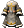

米魯里斯｜盧亞斯｜斯歐米｜魔界村｜魯克西翁｜艾德安德
卡雷瓦拉｜伊卡洛斯｜萊比亞|櫻花村|交流廣場
曾是古代門特文明首都的樹上之城
位於邁索西亞大陸西北部「米魯里斯森林」中，「神之樹伊梅特里」之上的城鎮。
在門特文明時代繁榮發展的米魯里斯，受到神的封印影響很大，逐漸衰退。
現在的米魯里斯，是個零星散布的過往遺跡令人緬懷黃金時代的寧靜和平城鎮。
以最古老的歷史自豪，發現了許多遺跡與遺物的米魯里斯。
尋找據說隱藏在米魯里斯森林中的寶藏的冒險家絡繹不絕，但被怪物襲擊而喪命的冒險家也不少。另一方面，米魯里斯森林提供豐富的資源，藉此可以取得基本的冒險裝備。
城鎮裡有「祭神神殿」(侍奉全6神的神殿)，許多聖職者居住在這裡。也是供奉最高神「塞奧」的唯一場所。另外，在米魯里斯，祭神神殿的最高神官兼任市長，人們以強烈的信仰心連結，過著不沾染世俗的市民生活。
在位於大樹之上的城鎮米魯里斯，木造的美麗民宅與商店林立，據說造訪的旅人會有宛如迷失在童話之國般的印象。
特徵
聖職者的城鎮。
城鎮中央有支援藥局的NPC。
城鎮
NPC
⇒NPC一覽
⇒NPC一覽
| 職責 | NPC名 | 地圖名 | 座標 |
| 藥店 | 海路娜 | 89.31 | |
| 神官(販賣捲軸、技能) | 露娜 | 米魯里斯廣場 | 53.59 |
 藥學 藥學 | 煉金術 | 米魯里斯廣場 | 40.52 |
| 武具店 | 羅賓 | 22.59 | |
| 修理工 | 路易斯 | 28.61 | |
| 脫離新手裝備 | 金屬精靈 | 米魯里斯廣場 | 42.69 |
| 雜貨店 | 特依普 | 34.34 | |
| 萬事屋 | 莫莉 | 米魯里斯廣場 | 64.61 |
| 旅館 | 朵莉爾 | 96.79 | |
| 銀行員 | 魯奇 | 米魯里斯廣場 | 92.88 |
| 麥索西亞市場傳送德佩羅的請託 | 德佩羅 | ||
| 書店 | 布拉姆斯托克 | ||
| 登記回歸點 | 魯因特 | ||
| 活動介紹 | 格爾丁 | ||
| 網咖玩家支援 | [網咖]道具贈送 | ||
| 新手任務 |  小烏鵝 小烏鵝 | ||
| 師徒任務 | 長老之路 | ||
| 師徒輔助員 | 輔助員 | 盧亞斯王宮前 | 27.46 |
| 護脛升級 | 樹上礦場 | 米魯里斯廣場 | 38.95 |
| 進階免費任務配送 | 米魯里斯守備隊 |
道具販賣
⇒道具販賣一覽
⇒道具販賣一覽
鐵匠鋪
| 名稱 | 價格 | 限制 | 職業 | Wei |
 木杖 木杖 | 600 | Lv1 | 戰修盜騎阿聖魔預吟 | 3 |
 哥布林之杖 哥布林之杖 | 5,400 | Lv10 | 戰修盜騎阿聖魔預吟 | 3 |
 領主之杖 領主之杖 | 75,000 | Lv25 | 戰修盜騎阿聖魔預吟 | 3 |
 凱恩之杖 凱恩之杖 | 210,000 | Lv45 | 戰修盜騎阿聖魔預吟 | 3 |
 棍棒 棍棒 | 2,400 | Lv5 | 戰修盜騎阿聖魔預吟 | 4 |
 尖刺棍棒 尖刺棍棒 | 6,300 | Lv10 | 戰修盜騎阿聖魔預吟 | 8 |
 硬頭鎚 硬頭鎚 | 6,300 | Lv5 | 戰修盜騎阿聖魔預吟 | 5 |
 小型戰鎚 小型戰鎚 | 34,500 | Lv15 | 戰修盜騎阿聖魔預吟 | 7 |
 塔爾加 塔爾加 | 400 | Lv1 | 戰修盜騎阿聖魔預吟 | 2 |
 圓盾 圓盾 | 8,000 | Lv6 | 戰修盜騎阿聖魔預吟 | 5 |
 星之圓盾 星之圓盾 | 28,000 | Lv11 | 戰修盜騎阿聖魔預吟 | 7 |
 迪坎長衫 迪坎長衫 | 400 | Lv1 | 戰修盜騎阿聖魔預吟男 | 2 |
 迪坎長袍 迪坎長袍 | 400 | Lv1 | 戰修盜騎阿聖魔預吟女 | 2 |
 弗萊亞長衫 弗萊亞長衫 | 4,400 | Lv11 | 戰修盜騎阿聖魔預吟男 | 4 |
 弗萊亞長袍 弗萊亞長袍 | 4,400 | Lv11 | 戰修盜騎阿聖魔預吟女 | 4 |
 比卡克魯遮光者 比卡克魯遮光者 | 16,600 | Lv21 | 戰修盜騎阿聖魔預吟男 | 6 |
 比卡克魯淑女 比卡克魯淑女 | 16,600 | Lv21 | 戰修盜騎阿聖魔預吟女 | 6 |
 雷克塔克魯遮光者 雷克塔克魯遮光者 | 31,000 | Lv31 | 戰修盜騎阿聖魔預吟男 | 12 |
 雷克塔克魯淑女 雷克塔克魯淑女 | 62,000 | Lv31 | 戰修盜騎阿聖魔預吟女 | 8 |
 主教克魯遮光者 主教克魯遮光者 | 164,000 | Lv51 | 戰修盜騎阿聖魔預吟男 | 10 |
 主教克魯淑女 主教克魯淑女 | 164,000 | Lv51 | 戰修盜騎阿聖魔預吟女 | 10 |
 大師罩衫 | 20,000,000 | Lv91 | 戰修盜騎阿聖魔預吟男 | 18 |
 大師法利姆 大師法利姆 | 20,000,000 | Lv91 | 戰修盜騎阿聖魔預吟女 | 18 |
雜貨店
| 名稱 | 價格 | 限制 | 職業 | Wei |
 斯佩特 斯佩特 | 3,000 | Lv1 | 戰修盜騎阿聖魔預吟 | 2 |
 重型斯佩特 重型斯佩特 | 9,000 | Lv1 | 戰修盜騎阿聖魔預吟 | 3 |
 吊襪帶 吊襪帶 | 13,000 | Lv1 | 戰修盜騎阿聖魔預吟 | 4 |
 重型吊襪帶 重型吊襪帶 | 33,000 | Lv1 | 戰修盜騎阿聖魔預吟 | 5 |
 輕型手套 輕型手套 | 3,000 | Lv1 | 戰修盜騎阿聖魔預吟 | 2 |
 手套 手套 | 13,000 | Lv11 | 戰修盜騎阿聖魔預吟 | 4 |
| 重型手套 | 500,000 | Lv21 | 戰修盜騎阿聖魔預吟 | 4 |
 涼鞋 涼鞋 | 3,000 | Lv1 | 戰修盜騎阿聖魔預吟 | 1 |
 皮涼鞋 皮涼鞋 | 9,000 | Lv1 | 戰修盜騎阿聖魔預吟 | 2 |
 便鞋 便鞋 | 12,000 | Lv1 | 戰修盜騎阿聖魔預吟 | 3 |
 皮鞋 皮鞋 | 33,000 | Lv1 | 戰修盜騎阿聖魔預吟 | 4 |
 尼爾勳章 尼爾勳章 | 3,000 | Lv1 | 戰修盜騎阿聖魔預吟 | 1 |
 鎖鏈勳章 鎖鏈勳章 | 5,000 | Lv1 | 戰修盜騎阿聖魔預吟 | 1 |
 風之勳章 風之勳章 | 3,000 | Lv1 | 戰修盜騎阿聖魔預吟 | 1 |
 空氣勳章 空氣勳章 | 5,000 | Lv1 | 戰修盜騎阿聖魔預吟 | 1 |
 水之勳章 水之勳章 | 3,000 | Lv1 | 戰修盜騎阿聖魔預吟 | 1 |
 水滴勳章 水滴勳章 | 5,000 | Lv1 | 戰修盜騎阿聖魔預吟 | 1 |
 阿斯勳章 阿斯勳章 | 3,000 | Lv1 | 戰修盜騎阿聖魔預吟 | 1 |
 黏土勳章 黏土勳章 | 5,000 | Lv1 | 戰修盜騎阿聖魔預吟 | 1 |
 倫斯勳章 倫斯勳章 | 40,000 | Lv1 | 戰修盜騎阿聖魔預吟 | 1 |
 火之勳章 火之勳章 | 3,000 | Lv1 | 戰修盜騎阿聖魔預吟 | 1 |
 格雷亞勳章 格雷亞勳章 | 5,000 | Lv1 | 戰修盜騎阿聖魔預吟 | 1 |
 腰帶 腰帶 | 1,000 | Lv1 | 戰修盜騎阿聖魔預吟 | 1 |
 輕型腰帶 輕型腰帶 | 2,000 | Lv1 | 戰修盜騎阿聖魔預吟 | 1 |
| 腰帶 | 14,000 | Lv1 | 戰修盜騎阿聖魔預吟 | 1 |
 重皮帶 重皮帶 | 54,000 | Lv1 | 戰修盜騎阿聖魔預吟 | 1 |
 克倫帶 克倫帶 | 82,000 | Lv1 | 戰修盜騎阿聖魔預吟 | 2 |
 吉戈爾帶 吉戈爾帶 | 82,000 | Lv1 | 戰修盜騎阿聖魔預吟 | 2 |
 格蘭帶 格蘭帶 | 82,000 | Lv1 | 戰修盜騎阿聖魔預吟 | 2 |
 戴姆帶 戴姆帶 | 82,000 | Lv1 | 戰修盜騎阿聖魔預吟 | 2 |
 雨之耳環 雨之耳環 | 8,000 | Lv1 | 戰修盜騎阿聖魔預吟 | 1 |
 石耳環 石耳環 | 8,000 | Lv1 | 戰修盜騎阿聖魔預吟 | 1 |
 空氣耳環 空氣耳環 | 8,000 | Lv1 | 戰修盜騎阿聖魔預吟 | 1 |
 阿斯戒指 阿斯戒指 | 3,000 | Lv1 | 戰修盜騎阿聖魔預吟 | 1 |
 黏土戒指 黏土戒指 | 6,000 | Lv1 | 戰修盜騎阿聖魔預吟 | 1 |
 商業許可證 商業許可證 | 1,000 | Lv21 | 戰修盜騎阿聖魔預吟 | 0 |
 口袋 口袋 | 100,000 | Lv1 | 戰修盜騎阿聖魔預吟 | 3 |
藥店
| 名稱 | 價格 | 限制 | 職業 | Wei |
 赫爾莉菈 赫爾莉菈 | 60 | Lv0 | 戰修盜騎阿聖魔預吟 | 1 |
| 赫爾莉洛 | 150 | Lv0 | 戰修盜騎阿聖魔預吟 | 1 |
| 赫爾莉克 | 500 | Lv0 | 戰修盜騎阿聖魔預吟 | 1 |
 史黛莉菈 史黛莉菈 | 120 | Lv0 | 戰修盜騎阿聖魔預吟 | 1 |
| 史黛莉洛 | 300 | Lv0 | 戰修盜騎阿聖魔預吟 | 1 |
| 史黛莉克 | 1,000 | Lv0 | 戰修盜騎阿聖魔預吟 | 1 |
 瑪娜莉菈 瑪娜莉菈 | 120 | Lv0 | 戰修盜騎阿聖魔預吟 | 1 |
| 瑪娜莉洛 | 300 | Lv0 | 戰修盜騎阿聖魔預吟 | 1 |
| 瑪娜莉克 | 1,000 | Lv0 | 戰修盜騎阿聖魔預吟 | 1 |
 黑暗解除藥水 黑暗解除藥水 | 100 | Lv0 | 戰修盜騎阿聖魔預吟 | 1 |
| 混亂解除藥水 | 100 | Lv0 | 戰修盜騎阿聖魔預吟 | 1 |
| 中毒治療藥水 | 100 | Lv0 | 戰修盜騎阿聖魔預吟 | 1 |
| 停止解除藥水 | 100 | Lv0 | 戰修盜騎阿聖魔預吟 | 1 |
 快速藥水 快速藥水 | 1,000 | Lv0 | 戰修盜騎阿聖魔預吟 | 0 |
 速度藥水(高速) 速度藥水(高速) | 10,000 | Lv0 | 戰修盜騎阿聖魔預吟 | 0 |
 米魯里斯傳送門 米魯里斯傳送門 | 350 | Lv0 | 戰修盜騎阿聖魔預吟 | 1 |
 海市蜃樓地圖 海市蜃樓地圖 | 3,000 | Lv0 | 戰修盜騎阿聖魔預吟 | 0 |
 染色藥(深褐) 染色藥(深褐) | 10,000 | Lv0 | 戰修盜騎阿聖魔預吟 | 1 |
| 染色藥(紅褐) | 10,000 | Lv0 | 戰修盜騎阿聖魔預吟 | 1 |
| 染色藥(藍) | 10,000 | Lv0 | 戰修盜騎阿聖魔預吟 | 1 |
| 染色藥(藍綠) | 10,000 | Lv0 | 戰修盜騎阿聖魔預吟 | 1 |
| 染色藥(紫) | 10,000 | Lv0 | 戰修盜騎阿聖魔預吟 | 1 |
| 染色藥(橙) | 10,000 | Lv0 | 戰修盜騎阿聖魔預吟 | 1 |
| 染色藥(綠) | 10,000 | Lv0 | 戰修盜騎阿聖魔預吟 | 1 |
| 染色藥(黃綠) | 10,000 | Lv0 | 戰修盜騎阿聖魔預吟 | 1 |
| 染色藥(褐) | 10,000 | Lv0 | 戰修盜騎阿聖魔預吟 | 1 |
| 染色藥(黑) | 10,000 | Lv0 | 戰修盜騎阿聖魔預吟 | 1 |
萬事屋
| 名稱 | 價格 | 限制 | 職業 | Wei |
 木刀 木刀 | 300 | Lv1 | 戰修盜騎阿聖魔預吟 | 3 |
 木短劍 木短劍 | 600 | Lv1 | 戰修盜騎阿聖魔預吟 | 2 |
 銅劍 銅劍 | 4,800 | Lv10 | 戰修盜騎阿聖魔預吟 | 3 |
 博頓劍卡 博頓劍卡 | 500 | Lv1 | 戰修盜騎阿聖魔預吟 | 3 |
 加提爾卡組 加提爾卡組 | 500 | Lv1 | 戰修盜騎阿聖魔預吟 | 3 |
 石斧 石斧 | 3,600 | Lv1 | 戰修盜騎阿聖魔預吟 | 3 |
| 棍棒 | 2,400 | Lv5 | 戰修盜騎阿聖魔預吟 | 4 |
 僧侶護身符 僧侶護身符 | 500 | Lv1 | 戰修盜騎阿聖魔預吟 | 1 |
| 塔爾加 | 400 | Lv1 | 戰修盜騎阿聖魔預吟 | 2 |
 劍士服 劍士服 | 400 | Lv1 | 戰修盜騎阿聖魔預吟男 | 2 |
 女劍士服 女劍士服 | 400 | Lv1 | 戰修盜騎阿聖魔預吟女 | 2 |
 戰士皮甲 戰士皮甲 | 4,400 | Lv11 | 戰修盜騎阿聖魔預吟男 | 5 |
 戰士皮甲(女) 戰士皮甲(女) | 4,400 | Lv11 | 戰修盜騎阿聖魔預吟女 | 5 |
 斯尼卡外衣 斯尼卡外衣 | 400 | Lv1 | 戰修盜騎阿聖魔預吟男 | 2 |
 斯尼卡女衫 斯尼卡女衫 | 400 | Lv1 | 戰修盜騎阿聖魔預吟女 | 2 |
 巴格勒外衣 巴格勒外衣 | 4,400 | Lv11 | 戰修盜騎阿聖魔預吟男 | 4 |
 巴格勒女衫 巴格勒女衫 | 4,400 | Lv11 | 戰修盜騎阿聖魔預吟女 | 8 |
 阿夫倫提斯長袍 阿夫倫提斯長袍 | 400 | Lv1 | 戰修盜騎阿聖魔預吟男 | 2 |
 阿夫倫提斯兜帽 阿夫倫提斯兜帽 | 400 | Lv1 | 戰修盜騎阿聖魔預吟女 | 2 |
 因沃卡長袍 因沃卡長袍 | 4,400 | Lv11 | 戰修盜騎阿聖魔預吟男 | 4 |
 因沃卡兜帽 因沃卡兜帽 | 4,400 | Lv11 | 戰修盜騎阿聖魔預吟女 | 4 |
| 迪坎長衫 | 400 | Lv1 | 戰修盜騎阿聖魔預吟男 | 2 |
| 迪坎長袍 | 400 | Lv1 | 戰修盜騎阿聖魔預吟女 | 2 |
| 弗萊亞長衫 | 4,400 | Lv11 | 戰修盜騎阿聖魔預吟男 | 4 |
| 弗萊亞長袍 | 4,400 | Lv11 | 戰修盜騎阿聖魔預吟女 | 4 |
 克雷斯特 克雷斯特 | 400 | Lv1 | 戰修盜騎阿聖魔預吟男 | 2 |
 克雷斯菲特 克雷斯菲特 | 400 | Lv1 | 戰修盜騎阿聖魔預吟女 | 2 |
 卡波耶拉特 卡波耶拉特 | 4,400 | Lv11 | 戰修盜騎阿聖魔預吟男 | 5 |
 卡波耶拉菲特 卡波耶拉菲特 | 4,400 | Lv11 | 戰修盜騎阿聖魔預吟女 | 5 |
 迪普勞德短袍 迪普勞德短袍 | 400 | Lv1 | 戰修盜騎阿聖魔預吟男 | 2 |
 黛普勞恩長衫 黛普勞恩長衫 | 400 | Lv1 | 戰修盜騎阿聖魔預吟女 | 2 |
 坎布羅短袍 坎布羅短袍 | 4,400 | Lv11 | 戰修盜騎阿聖魔預吟男 | 4 |
 傑姆布爾戒長衫 傑姆布爾戒長衫 | 4,400 | Lv11 | 戰修盜騎阿聖魔預吟女 | 4 |
 鞭炮 鞭炮 | 400 | Lv0 | 戰修盜騎阿聖魔預吟 | 0 |
| 商業許可證 | 1,000 | Lv21 | 戰修盜騎阿聖魔預吟 | 0 |
 骰子 骰子 | 20 | Lv0 | 戰修盜騎阿聖魔預吟 | 0 |
 鑑定用放大鏡 鑑定用放大鏡 | 10,000 | Lv0 | 戰修盜騎阿聖魔預吟 | 1 |
 燒肉火柴 燒肉火柴 | 400 | Lv0 | 戰修盜騎阿聖魔預吟 | 0 |
 採集用小刀 採集用小刀 | 100,000 | Lv0 | 戰修盜騎阿聖魔預吟 | 1 |
 炸彈 炸彈 | 500 | Lv0 | 戰修盜騎阿聖魔預吟 | 0 |
 進階自由任務說明書 進階自由任務說明書 | 100 | Lv0 | 戰修盜騎阿聖魔預吟 | 0 |
 特殊稱號捲軸 特殊稱號捲軸 | 10 | Lv0 | 戰修盜騎阿聖魔預吟 | 0 |
 拼圖片 2-11 拼圖片 2-11 | 2,000 | Lv0 | 戰修盜騎阿聖魔預吟 | 0 |
 怪物相簿重置藥 怪物相簿重置藥 | 50,000 | Lv0 | 戰修盜騎阿聖魔預吟 | 0 |
神官
| 名稱 | 價格 | 限制 | 職業 | Wei |
| 歸還 | 1,000 | Lv0 | 戰修盜騎阿聖魔預吟 | 1 |
| 回歸點 | 100,000 | Lv1 | 戰修盜騎阿聖魔預吟 | 1 |
 攻擊 攻擊 | 1,000 | Lv0 | 戰修盜騎阿聖魔預吟 | 1 |
 位置確認 位置確認 | 10,000 | Lv5 | 戰修盜騎阿聖魔預吟 | 1 |
 守護者檢查 守護者檢查 | 1,000 | Lv1 | 戰修盜騎阿聖魔預吟 | 1 |
| 解除裝備 | 10 | Lv1 | 戰修盜騎阿聖魔預吟 | 0 |
| 古代捲軸(店售品) | 20,000 | Lv0 | 戰修盜騎阿聖魔預吟 | 1 |
 祝福捲軸(店售品) 祝福捲軸(店售品) | 500,000 | Lv0 | 戰修盜騎阿聖魔預吟 | 1 |
| 詛咒捲軸(店售品) | 100,000 | Lv0 | 戰修盜騎阿聖魔預吟 | 1 |
 體力捲軸 體力捲軸 | 100,000 | Lv0 | 戰修盜騎阿聖魔預吟 | 1 |
| 魔力捲軸 | 100,000 | Lv0 | 戰修盜騎阿聖魔預吟 | 1 |
| 氣力捲軸 | 100,000 | Lv0 | 戰修盜騎阿聖魔預吟 | 1 |
| 破邪捲軸 | 100,000 | Lv0 | 戰修盜騎阿聖魔預吟 | 1 |
| 技術捲軸 | 100,000 | Lv0 | 戰修盜騎阿聖魔預吟 | 1 |
| 甲殼捲軸 | 100,000 | Lv0 | 戰修盜騎阿聖魔預吟 | 1 |
| 破魔捲軸 | 100,000 | Lv0 | 戰修盜騎阿聖魔預吟 | 1 |
| 閃避捲軸 | 100,000 | Lv0 | 戰修盜騎阿聖魔預吟 | 1 |
| 避魔捲軸 | 100,000 | Lv0 | 戰修盜騎阿聖魔預吟 | 1 |
| 自我治癒(聖) | 150 | Lv3 | 戰修盜騎阿聖魔預吟 | 0 |
| 小治癒 | 250 | Lv5 | 戰修盜騎阿聖魔預吟 | 0 |
| 解毒術 | 150 | Lv3 | 戰修盜騎阿聖魔預吟 | 0 |
| 治癒 | 7,500 | Lv15 | 戰修盜騎阿聖魔預吟 | 0 |
 神職者之盾 神職者之盾 | 5,000 | Lv10 | 戰修盜騎阿聖魔預吟 | 0 |
| 強力治療術 | 90,000 | Lv30 | 戰修盜騎阿聖魔預吟 | 0 |
 恢復 恢復 | 250,000 | Lv50 | 戰修盜騎阿聖魔預吟 | 0 |
| 神聖護體(聖) | 25,000 | Lv25 | 戰修盜騎阿聖魔預吟 | 0 |
 哈沃克石(店賣品) 哈沃克石(店賣品) | 54,100 | Lv3 | 戰修盜騎阿聖魔預吟 | 0 |
 聖蟲 聖蟲 | 150 | Lv3 | 戰修盜騎阿聖魔預吟 | 0 |
 神聖視覺 神聖視覺 | 150 | Lv3 | 戰修盜騎阿聖魔預吟 | 0 |
 普雷黎明 普雷黎明 | 150 | Lv3 | 戰修盜騎阿聖魔預吟 | 0 |
| 再生術 | 120,000 | Lv40 | 戰修盜騎阿聖魔預吟 | 0 |
| 反詛咒防禦 | 10,000 | Lv70 | 戰修盜騎阿聖魔預吟 | 0 |
| 反詛咒保護 | 10,000 | Lv70 | 戰修盜騎阿聖魔預吟 | 0 |
| 普通作業 | 10,000 | Lv70 | 戰修盜騎阿聖魔預吟 | 0 |
 反能力 反能力 | 10,000 | Lv70 | 戰修盜騎阿聖魔預吟 | 0 |
| 反全能力 | 10,000 | Lv70 | 戰修盜騎阿聖魔預吟 | 0 |
| 群體恢復 | 300,000 | Lv60 | 戰修盜騎阿聖魔預吟 | 0 |
| 神聖打擊 | 100,000 | Lv21 | 戰修盜騎阿聖魔預吟 | 1 |
| 氣力意象[等級1] | 1,000 | Lv10 | 戰修盜騎阿聖魔預吟 | 1 |
| 靈魂意象[等級5] | 1,000 | Lv99 | 戰修盜騎阿聖魔預吟 | 1 |
煉金術
| 名稱 | 價格 | 限制 | 職業 | Wei |
| 藥學 | 30,000 | Lv21 | 戰修盜騎阿聖魔預吟 | 2 |
 世界樹的葉子 世界樹的葉子 | 100 | Lv0 | 戰修盜騎阿聖魔預吟 | 0 |
 麝香 麝香 | 100 | Lv0 | 戰修盜騎阿聖魔預吟 | 0 |
 瓶子 瓶子 | 300 | Lv0 | 戰修盜騎阿聖魔預吟 | 0 |
 製藥工具4格 製藥工具4格 | 50,000 | Lv0 | 戰修盜騎阿聖魔預吟 | 1 |
 赫爾莉菈處方 赫爾莉菈處方 | 10 | Lv0 | 戰修盜騎阿聖魔預吟 | 0 |
 赫爾莉洛處方籤(商店販售品) 赫爾莉洛處方籤(商店販售品) | 100 | Lv0 | 戰修盜騎阿聖魔預吟 | 0 |
| 赫爾莉克處方籤(商店販售品) | 150 | Lv0 | 戰修盜騎阿聖魔預吟 | 0 |
| 赫爾莉克夏處方籤(商店販售品) | 260 | Lv0 | 戰修盜騎阿聖魔預吟 | 0 |
 瑪娜莉菈處方 瑪娜莉菈處方 | 30 | Lv0 | 戰修盜騎阿聖魔預吟 | 0 |
 瑪娜莉洛處方籤(商店販售品) 瑪娜莉洛處方籤(商店販售品) | 100 | Lv0 | 戰修盜騎阿聖魔預吟 | 0 |
| 瑪娜莉克處方籤(商店販售品) | 180 | Lv0 | 戰修盜騎阿聖魔預吟 | 0 |
| 瑪娜莉克夏處方 | 300 | Lv0 | 戰修盜騎阿聖魔預吟 | 0 |
 史黛莉菈處方 史黛莉菈處方 | 50 | Lv0 | 戰修盜騎阿聖魔預吟 | 0 |
 史黛莉洛處方籤(商店販售品) 史黛莉洛處方籤(商店販售品) | 120 | Lv0 | 戰修盜騎阿聖魔預吟 | 0 |
| 史黛莉克處方籤(商店販售品) | 300 | Lv0 | 戰修盜騎阿聖魔預吟 | 0 |
| 史黛莉克夏處方 | 340 | Lv0 | 戰修盜騎阿聖魔預吟 | 0 |
 解毒劑處方 解毒劑處方 | 60 | Lv0 | 戰修盜騎阿聖魔預吟 | 0 |
| 移動輔助藥處方 | 120 | Lv0 | 戰修盜騎阿聖魔預吟 | 0 |
| 視力回復藥處方 | 120 | Lv0 | 戰修盜騎阿聖魔預吟 | 0 |
| 精神安定劑處方 | 360 | Lv0 | 戰修盜騎阿聖魔預吟 | 0 |
| 赫爾莉菈U處方 | 200 | Lv0 | 戰修盜騎阿聖魔預吟 | 0 |
| 赫爾莉洛U處方籤(商店販售品) | 250 | Lv0 | 戰修盜騎阿聖魔預吟 | 0 |
| 赫爾莉克U處方 | 500 | Lv0 | 戰修盜騎阿聖魔預吟 | 0 |
| 瑪娜莉菈U處方 | 220 | Lv0 | 戰修盜騎阿聖魔預吟 | 0 |
| 瑪娜莉洛U處方籤(商店販售品) | 250 | Lv0 | 戰修盜騎阿聖魔預吟 | 0 |
| 瑪娜莉克U處方 | 540 | Lv0 | 戰修盜騎阿聖魔預吟 | 0 |
| 史黛莉菈U處方 | 270 | Lv0 | 戰修盜騎阿聖魔預吟 | 0 |
| 赫爾莉菈T處方 | 220 | Lv0 | 戰修盜騎阿聖魔預吟 | 0 |
| 瑪娜莉菈T處方 | 260 | Lv0 | 戰修盜騎阿聖魔預吟 | 0 |
| 史黛莉菈T處方 | 300 | Lv0 | 戰修盜騎阿聖魔預吟 | 0 |
| 赫爾莉菈G40處方 | 600 | Lv0 | 戰修盜騎阿聖魔預吟 | 0 |
| 瑪娜莉菈G40處方 | 650 | Lv0 | 戰修盜騎阿聖魔預吟 | 0 |
| 史黛莉菈G40處方 | 700 | Lv0 | 戰修盜騎阿聖魔預吟 | 0 |
 強力傷害處方 強力傷害處方 | 2,500 | Lv0 | 戰修盜騎阿聖魔預吟 | 0 |
| 爆擊處方 | 2,200 | Lv0 | 戰修盜騎阿聖魔預吟 | 0 |
| 堅實動作處方 | 1,500 | Lv0 | 戰修盜騎阿聖魔預吟 | 0 |
| 物理迴避藥水處方 | 1,400 | Lv0 | 戰修盜騎阿聖魔預吟 | 0 |
| 魔法迴避藥水處方 | 1,800 | Lv0 | 戰修盜騎阿聖魔預吟 | 0 |
藥學
製藥解說
製藥等級一覽表
任務
⇒任務
⇒任務
古代人的數字3 隱藏的意義
古代人的數字-隱藏的含義
瞬間移動捲軸
- 歷史 瞬間移動捲軸
- 開始條件 Lv15以上
- 內容 和神官露娜說話,取得5個「金粉」交給露娜。
- 獎勵品 以下其中1種
米魯里斯傳送門 3個
盧亞斯傳送門 3個
斯歐米傳送門 3個
脫離新手裝備4-戒指
脫離新手裝備4-戒指
魔窟補給路確保 目前NPC無反應
- 履歷 魔窟補給路確保
- 開始條件 雷尼亞民的記憶任務介紹之後
Lv43～Lv50以內？(Lv50戰、Lv50盜、Lv50聖、Lv50魔、Lv50吟、Lv47修確認發生,Lv49聖未發生,Lv50修未發生？,Lv43～50修未發生,50騎士未發生)※推薦等級標示為47 - 內容 和魔窟入口的瑪魯雷斯說話,狩獵指定的怪物後向瑪魯雷斯報告。
即使打倒了也有不被計算的情況,這大概是
因為即使同名也存在獲得經驗、取得道具、能力值不同的類型。
似乎只會計算固定的特定怪物。
不會發生中途夾雜打倒別的怪物就導致之後不計算的情況,請放心。
| 職業 | 內容 | 獎賞 |
| 戰士 | 打倒20隻哈迪姆巴博斯。 | 闊劍(有劍、斧的選項。選劍)和名聲經驗值5000 |
| 修道士 | 打倒20隻哈迪姆巴博斯。 | 鐵拳套和名聲經驗值5000 |
| 盜賊 | 打倒20隻哈迪姆巴博斯。 | 軍用小刀和名聲經驗值5000 |
| 聖職者 | 打倒20隻血櫻蝸牛。 | 治療者之杖和名聲經驗值5000 |
| 魔術師 | 打倒20隻哈迪姆巴博斯。 | 骰子法球和名聲經驗值5000 |
| 騎士 | 未確認 | 未確認 |
| 吟遊詩人 | 打倒20隻血櫻蝸牛。 | 雙動式豎琴和名聲經驗值5000 |
幫我找物品箱
- 履歷 請幫我找物品箱
- 開始條件 Lv21以上
- 內容 和武器店羅賓說話,交出從加利卡拉森的米斯提或盧亞斯森的伐木諾肯取得的物品箱。
- 獎勵品 心靈耳環 1個
諾肯藥草
- 履歷 諾肯的體力祕密
- 開始條件 Lv20以上？、僅限修道士、僅限1次？
- 內容 和藥水店赫爾娜說話,從盧亞斯森的伐木諾肯取得「諾肯藥草袋」交給赫爾娜。
- 獎勵品 康利克 3個
皮塔的遺骨
- 履歷 皮塔的遺骨
- 開始條件 Lv17以上
- 內容 帶著「骸骨」和雜貨店特依普說話,取得「骨頭20個」交給特依普。
※不是「哥布林的骨頭」,請注意
關鍵字如下
※不加『』輸入下列關鍵字就能推進對話
第1題： 『皮塔的遺骨』或(or)『皮塔的骸骨』
第2題： 『吉普賽少女』
第3題： 『哥布林與寶石』
第4題： 『哥布林,襲擊』 - 獎勵品 雙擊「寶石箱」會變成以下的梅林戒指 1個
※2008年12月3日更新後,「骨頭」改為不從河童掉落,而是從米魯里斯森的哥布林掉落。
討伐摩斯
- 履歷 摩斯討伐
- 開始條件 Lv5以上
- 內容 和旅館的艾米(90,60)說話,取得10張「摩斯皮」交給艾米。
- 獎勵品 丹恩涼鞋 1個
※另外Lv22以上時,持有丹恩涼鞋＋25個金粉和升級箱說話,
就能升級成金鞋。
旅館預約
- 歷史 旅館預約
- 開始條件 沒有做過斯歐米「旅館預約」
- 內容 和銀行員魯吉說話,從旅館的朵莉爾取得「旅館鑰匙」交給魯吉。
- 獎勵品 舊赫爾莉洛 1個 肉 10個